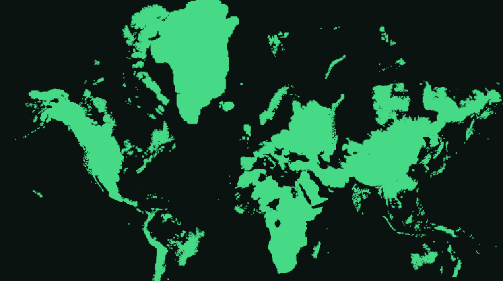
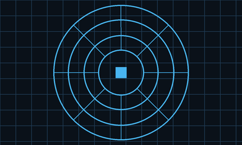
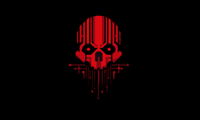
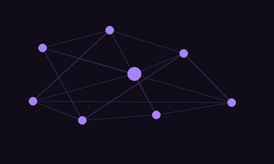
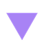
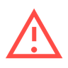
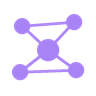

Component Library
Every reusable piece of this site in one place, with no page theme applied. The body tag here carries no page class, so these are the base versions; each page's own class recolours them.
A Setting for a Cyberpunk TTRPG Campaign
A player’s guide to Moscow, the Orihia Corporation, and the world outside the wall.

This is life, and it’s normal. People do as they always do. They try to survive.Player’s Guide — A Brief History
The City
city.html
Eight subsectors, from the sealed Citadel down to the Quarantine Zone. Where you live decides what you breathe.
Orihia
orihia.html
Weapons manufacturing, private military contracting, and the directors who sign off on both.
Factions
factions.html
The corporations, syndicates and cults you might work for, run from, or both at once.
| Roll | Subsector | At a glance |
|---|---|---|
| 1 | The Citadel Precinct | Sealed, tiered by rank, wrapped in its own smog storm |
| 2 | The Entertainment Quarter | The one sector with no curfew. Casinos, stadiums, night markets |
| 3 | Foundry Wards | Weapon plants and munitions dumps. Ozone and molten alloy |
| 4 | Saprozona | The Quarantine Zone, cordoned off and overtaken by a fungal nanobiome |
| 5 | The Archology | Admin offices, datacenters and legal, kept outside the Citadel |
| 6 | The Belt | The city's whole ocean frontage. Railheads and river terminals |
| 7 | New Moskova Ecologies | Engineered biospheres growing food, synthetic air and pharma |
| 8 | The Bastion | Militarised buffer between the city and the wasteland |


